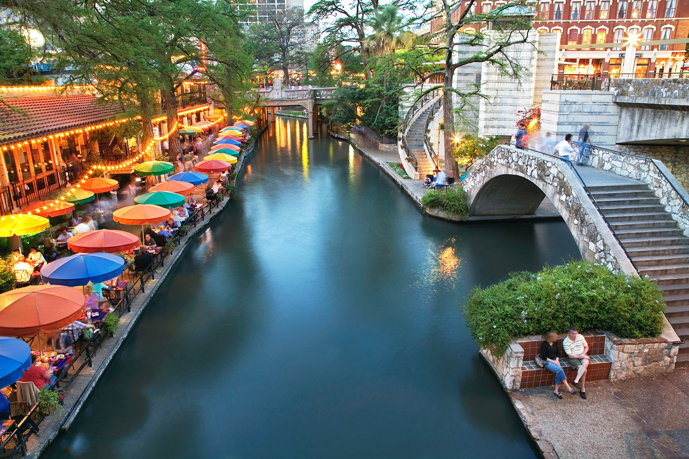

Come get a taste of Texas
San Antonio is the #1 tourist destination in the state

San Antonio Missions
9 missions situated around downtown. Start with the most iconic - The Alamo. Students grow up learning about the culture, taking tours at the National Historical Park.

San Antonio Riverwalk
Enjoy the winding loops of restaurants, shops, the Arneson River Theatre, La Villita, HemisFair Park, San Antonio Museum of Art and the Pearl District.